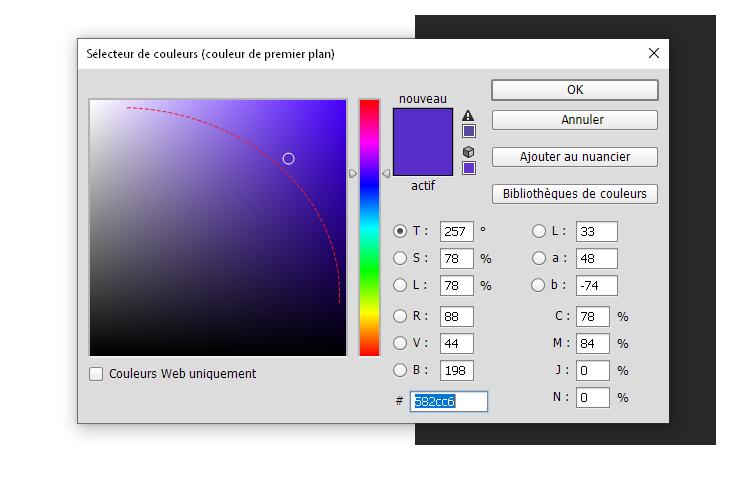
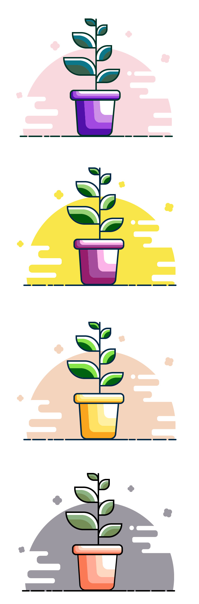

Color Palettes
Creation of several color palettes from one single color : #582cc6
To add other colors we use the photoshop color picker. We follow a bended line going from the top left corner to the right bottom corner. Following this line and changing the hue allows us to add 4 colors lighter (less saturated) and 4 darkers (shades).
Here is our palette
Then we'll add some value. We modify the saturation, lightness and hue. First row colors are less saturated (we moved the lightness up and the saturation down while moving slightly the hue), the middle are our original colors, and the bottom row is the opposite of the first row.
A solid color layer applied as overlay create a whole new palette
Illustrations created with illustrator using the color palettes.
